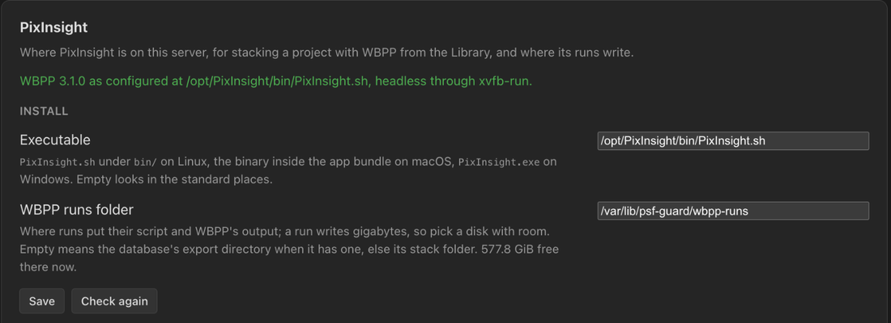
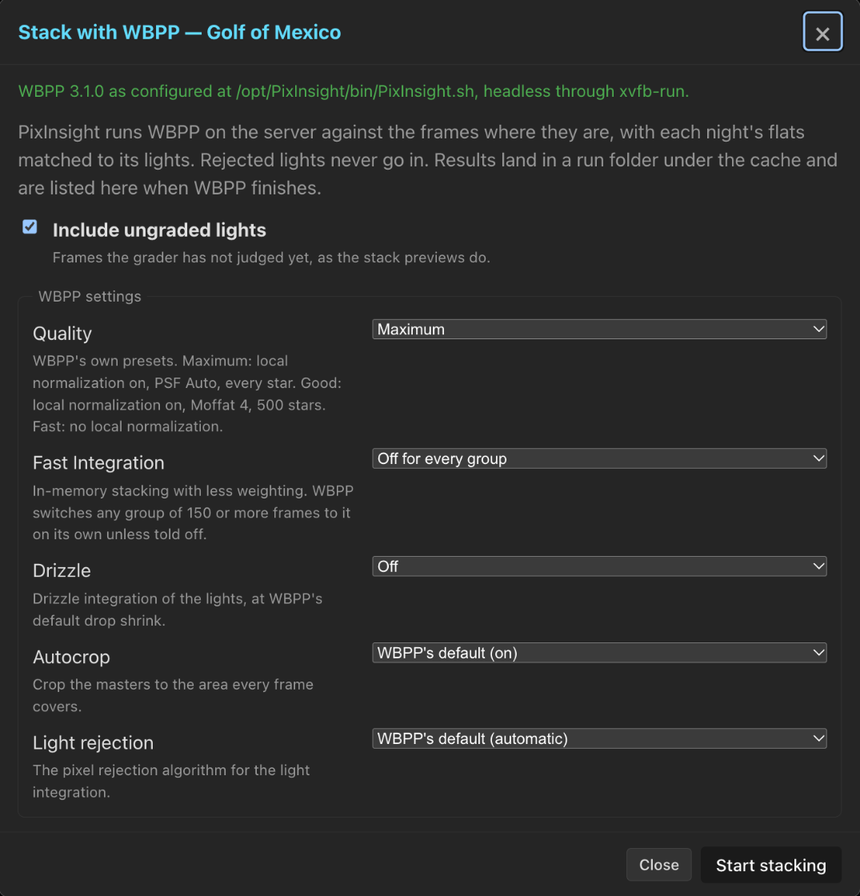
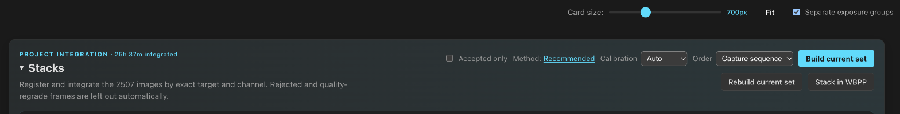

WBPP Runs
Run PixInsight's WeightedBatchPreprocessing (WBPP) on the server from PSF Guard, against the graded lights where they already are, with each night's flats and darks matched. The masters come back as stacks in the Stacks view.
Point PSF Guard at PixInsight
A run starts a program on the server, so it needs write access, the database-management grant, and a PixInsight install the server can reach. Set it up once under Settings → Setups → PixInsight:
- Executable: leave empty to look in the standard places
(
/opt/PixInsight,~/PixInsight, the macOS Applications folder, Program Files), or namePixInsight.shunderbin/on Linux, the binary inside the app bundle on macOS, orPixInsight.exeon Windows. - WBPP runs folder: where every database's runs go, as
<folder>/<database>/<project>-<time>/. A run writes gigabytes of calibrated and registered frames, so pick a disk with room; the panel shows the space free. Left empty, runs go under the database's server export directory, else its stack folder.
The panel says what it found, which WBPP version, and whether the server has a display. PixInsight's licence must already be activated for the account the server runs as; activation needs the real GUI once.

Run on a headless server
PixInsight needs a display. On a Linux server without one, install the
xvfb package. PSF Guard then runs PixInsight through
xvfb-run -a on its own, and the settings panel says so. For an
exported runner script, put xvfb-run -a in front of
run-wbpp.sh.
Stack in WBPP
Click Stack in WBPP beside Build stacks in the Stacks view, or on a project's full card in the Library. From Stacks the run covers the project, or the target chosen in the header. WBPP stacks a project's targets together, so for a project with several targets the button stays off in Stacks until you choose a target in the header.
The dialog asks for:
- Include ungraded lights, ticked by default: Pending frames go in, as they do in stacks. Rejected lights never do.
- WBPP settings: see below.
- More WBPP parameters: any other
name=valuepair WBPP accepts, one per line. WBPP lists them with Alt+A in its dialog. - Run folder: a folder for this run only, in place of the runs folder from Settings.
- Save the masters when done: copy the masters next to your finished work; see below.
Click Start stacking. PSF Guard plans the frames as an
export would, writes run-wbpp.js into the run folder, and starts
PixInsight on it headless.

WBPP settings
A headless run starts from WBPP's own defaults, not from what its dialog last saved, so these settings are the whole story. Drizzle and Fast Integration have no WBPP command-line parameter; the runner script sets them on every light group itself. Settings → Setups → Export holds the defaults that runs and WBPP exports start from.
| Setting | Choices | What it does |
|---|---|---|
| Quality | Maximum, Good, Fast | WBPP's presets. Maximum (default): local normalization with PSF Auto and every star. Good: local normalization with Moffat 4 and 500 stars. Fast: no local normalization. |
| Fast Integration | Off for every group, WBPP decides, On for every group | In-memory stacking with less weighting. WBPP switches any group of 150 frames or more to it on its own, which no one sees in a headless run, so the default is off. |
| Drizzle | Off, 2x, 3x | Drizzle integration of the lights at WBPP's default drop shrink and kernel. Off by default. |
| Autocrop | WBPP's default (on), On, Off | Crops the masters to the area every frame covers. |
| Light rejection | WBPP's default (automatic), or an algorithm | Pixel rejection for the light integration: Winsorized sigma clipping, Linear fit clipping, Generalized ESD, Robust Chauvenet, or Percentile clipping. |
Darks and flats per night
A run gets the calibration frames a PSF Guard stack would build its masters from: per light, the nearest coherent set of each kind, not every frame the library matched. Darks that caught stray light stay out, and the dialog counts them. See Calibration Libraries.
Each light carries a SESSION keyword for its night, so
each night's lights calibrate with that night's flats, and the nights
integrate together afterwards. When lights of one exposure were matched to
different darks, say each to its own complete night, each set of darks gets
a DARKSET_<night> keyword named for its nearest dark, and
WBPP pairs each set only with its own lights instead of averaging every
night's darks into one master. Bias, dark flats and flats carry no
DARKSET and serve every light. The same rule shapes WBPP
exports; see the WBPP layout.
Follow the run
The dialog follows WBPP's own log: the step it is on, the time so far, the last lines, and every line WBPP marks as an error. It counts the lights and calibration frames, the catalog rows with no file on disk, and the stray-light darks left out, and shows the space free at the run folder when the run began.
WBPP writes its log between steps, so a long integration shows nothing new for a while; the clock keeps counting while PixInsight works. Stop PixInsight ends the run.
When PixInsight exits, the dialog lists the masters WBPP wrote, each a
download, and links to run-wbpp.js, the WBPP log and
PixInsight's console output. Everything stays in the run folder on the
server's disk. A run that wrote no master is reported as failed, with the
last error WBPP logged.
The Library shows every database's run under way, just finished or in line, in any browser tab. The project's action then reads Stacking in WBPP…, Queued for WBPP, WBPP masters ready or WBPP failed, and either reopens the dialog. × on a finished run's row clears it from view; the run folder stays on disk.
Queue runs
PixInsight takes every core it can get, so the server runs one WBPP job at a time across all databases. Starting a run while another is going queues it: the dialog names the run PixInsight is busy with, its button reads Queue stacking, and Show that run switches to the running one. A queued run starts on its own when the running one ends, with the settings it was queued with.
The Library lists queued runs with their place; × or Remove from queue in the dialog takes one out. The header's background jobs chip lists the running run and the whole line on every database: ↑ and ↓ change the order, × takes a run out, and Stop ends the running one after asking once. These controls need write access and database management.
The line survives a restart: waiting runs keep their order. A run the restart cut off shows as stopped rather than starting again from nothing; start it again when you are ready. See Storage & Performance.
See the masters as stacks
When a run started from PSF Guard ends, it takes its master lights in as stacks before PixInsight starts the next run. They show under WBPP stacks, below PSF Guard's own stacks in Stacks, each with a preview and its FITS. In Combine channel stacks they appear as channel sources marked WBPP: choose L, R, G and B from WBPP, for example, and PSF Guard composes the color preview with the same background, stretch and processing as for its own stacks.
- One master is taken per filter and exposure. PSF Guard prefers one without drizzle, since color composition aligns channels of one scale, and then a cropped one. A drizzled master is taken when it is the only one.
- Masters are tied to a target only when the run covered one target. A run across several targets mixes them, and its masters are not taken in.
- WBPP records no frame count in a master, so its card says WBPP master.
- WBPP stacks never replace PSF Guard's stack of the same channel. A newer master for the same target, filter and exposure replaces the older one.
- An RGB master, such as one from a color camera, previews in color with a stretch per channel.
When taking the masters in fails, the section says why and offers Take in the last run to try again. It reads only that run's folder and needs database management.

Keep the masters with your finished work
Many people keep finished work per rig beside the frames: a
_Process folder next to _Source, one folder per
processing project, and the WBPP masters in master/ inside it.
Give the database a Process directory under
Settings → Databases, and the run dialog offers to save
the masters there.
Name the project's folder and tick Save the masters when
done before a run, or click Save masters after it.
The masters are copied to
<process directory>/<folder>/master/. PSF Guard
remembers the folder name per project. Nothing is overwritten: a file of the
same size is taken as the same file and skipped, and one of a different size
is left alone and named. Only the masters are copied; the calibrated and
registered frames stay in the run folder.
Start runs from an agent
The MCP tools start_wbpp_run and
cancel_wbpp_run start and stop a run, and
get_jobs reports its progress. They need write access and
database management, as the dialog does. See MCP
for Agents.
What can go wrong
| Symptom | Check |
|---|---|
| PixInsight not found | The settings panel lists where it looked. Name the executable in Executable. |
| No display | Install xvfb on the Linux server. |
| Frames left out | The run names each frame by its full path. A catalog row whose file is not under the database's image folders is left out and counted. |
| Fewer darks than the library holds | Darks marked for stray light stay out, and the dialog counts them. |
| WBPP wrote no master | Read WBPP's log from the dialog. The usual causes are a group WBPP could not register, or calibration frames that do not match. PixInsight's console output is empty in this mode. |
*** Error: No database files have been selected. | The server's PixInsight has no local star catalog for WBPP's plate solver. WBPP solves another way and goes on. |
| A path with a comma | WBPP's command line separates parameters with commas, so PSF Guard refuses a run folder or frame path that holds one. |
| Masters not in Stacks | The run covered several targets, or taking them in failed; use Take in the last run. |